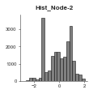
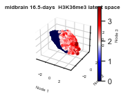

Histone modification data¶
Example using Histone modification data downloaded from Encode¶
[5]:
import pandas as pd
import numpy as np
from scivae import VAE
# Set the location of the mnist data
data_dir ='~/Documents/code/scivae_public/tests/data/'
df = pd.read_csv(f'{data_dir}mouse_HM_var500_data.csv')
df
[5]:
| entrezgene_id | external_gene_name | ensembl_gene_id | embryonic-facial-prominence_10.5-days_embryonic_H3K27ac_ChIP-seq_ENCFF003VMR_width | embryonic-facial-prominence_10.5-days_embryonic_H3K27ac_ChIP-seq_ENCFF003VMR_signal | embryonic-facial-prominence_10.5-days_embryonic_H3K27me3_ChIP-seq_ENCFF310NGB_width | embryonic-facial-prominence_10.5-days_embryonic_H3K27me3_ChIP-seq_ENCFF310NGB_signal | embryonic-facial-prominence_10.5-days_embryonic_H3K36me3_ChIP-seq_ENCFF565QAD_width | embryonic-facial-prominence_10.5-days_embryonic_H3K36me3_ChIP-seq_ENCFF565QAD_signal | embryonic-facial-prominence_10.5-days_embryonic_H3K4me1_ChIP-seq_ENCFF053GHW_width | ... | stomach_16.5-days_embryonic_H3K4me1_ChIP-seq_ENCFF814BNR_width | stomach_16.5-days_embryonic_H3K4me1_ChIP-seq_ENCFF814BNR_signal | stomach_16.5-days_embryonic_H3K4me2_ChIP-seq_ENCFF501CJA_width | stomach_16.5-days_embryonic_H3K4me2_ChIP-seq_ENCFF501CJA_signal | stomach_16.5-days_embryonic_H3K4me3_ChIP-seq_ENCFF569KWB_width | stomach_16.5-days_embryonic_H3K4me3_ChIP-seq_ENCFF569KWB_signal | stomach_16.5-days_embryonic_H3K9ac_ChIP-seq_ENCFF068FWP_width | stomach_16.5-days_embryonic_H3K9ac_ChIP-seq_ENCFF068FWP_signal | stomach_16.5-days_embryonic_H3K9me3_ChIP-seq_ENCFF544RGQ_width | stomach_16.5-days_embryonic_H3K9me3_ChIP-seq_ENCFF544RGQ_signal | |
|---|---|---|---|---|---|---|---|---|---|---|---|---|---|---|---|---|---|---|---|---|---|
| 0 | 497097 | Xkr4 | ENSMUSG00000051951 | 838.0 | 4.64805 | 2236.0 | 4.70623 | NaN | NaN | 841.0 | ... | 459.0 | 4.17547 | 2522.0 | 32.56543 | 2456.0 | 37.44113 | 1852.0 | 6.81303 | NaN | NaN |
| 1 | 384198 | Fam47e | ENSMUSG00000057068 | NaN | NaN | NaN | NaN | NaN | NaN | NaN | ... | NaN | NaN | NaN | NaN | NaN | NaN | NaN | NaN | NaN | NaN |
| 2 | 12492 | Scarb2 | ENSMUSG00000029426 | 2053.0 | 16.06083 | NaN | NaN | 4699.0 | 4.03960 | 787.0 | ... | 797.0 | 4.94311 | 862.0 | 20.08811 | 3071.0 | 61.25575 | 2503.0 | 24.87381 | NaN | NaN |
| 3 | 269113 | Nup54 | ENSMUSG00000034826 | 1546.0 | 23.33510 | NaN | NaN | 8433.0 | 4.30511 | 462.0 | ... | 215.0 | 2.45555 | 1376.0 | 35.42474 | 2128.0 | 66.67310 | 1165.0 | 28.39603 | 425.0 | 3.4231 |
| 4 | 15945 | Cxcl10 | ENSMUSG00000034855 | NaN | NaN | 984.0 | 4.95978 | NaN | NaN | 1086.0 | ... | 641.0 | 3.41532 | 794.0 | 13.95355 | 661.0 | 8.53067 | NaN | NaN | NaN | NaN |
| ... | ... | ... | ... | ... | ... | ... | ... | ... | ... | ... | ... | ... | ... | ... | ... | ... | ... | ... | ... | ... | ... |
| 20395 | 21762 | Psmd2 | ENSMUSG00000006998 | 1431.0 | 10.42818 | NaN | NaN | 4157.0 | 3.39655 | 1512.0 | ... | NaN | NaN | 1407.0 | 13.44737 | 1765.0 | 61.31395 | 1525.0 | 20.17010 | NaN | NaN |
| 20396 | 73047 | Camk2n2 | ENSMUSG00000051146 | 2117.0 | 10.87675 | 3875.0 | 5.10808 | 734.0 | 3.56510 | 3664.0 | ... | 656.0 | 4.96696 | 3348.0 | 26.86646 | 3417.0 | 25.29333 | 1863.0 | 7.71053 | NaN | NaN |
| 20397 | 107522 | Ece2 | ENSMUSG00000022842 | 1041.0 | 7.72166 | 3514.0 | 5.33374 | NaN | NaN | 1335.0 | ... | 301.0 | 2.85033 | 1312.0 | 30.50417 | 1046.0 | 31.87724 | 926.0 | 10.12819 | NaN | NaN |
| 20398 | 208624 | Alg3 | ENSMUSG00000033809 | 2342.0 | 17.18692 | NaN | NaN | 754.0 | 5.22586 | 1288.0 | ... | NaN | NaN | 3259.0 | 44.11346 | 2597.0 | 66.85134 | 834.0 | 9.84724 | NaN | NaN |
| 20399 | 328643 | Vwa5b2 | ENSMUSG00000046613 | 666.0 | 1.94738 | 7033.0 | 14.60257 | 4385.0 | 7.32809 | 2502.0 | ... | 724.0 | 3.69700 | 1864.0 | 32.48818 | 1716.0 | 28.13862 | 1324.0 | 7.19501 | NaN | NaN |
20400 rows × 997 columns
Normalise the data¶
Before running the VAE we might only want to do it on a subset, here I’m interested in marks at day E10.5 only in the brain.
[7]:
df = df.fillna(0)
# Get out columns with HM values
cols = [c for c in df.columns if '10' in c and 'brain' in c and 'signal' in c] # i.e. only do brain at E10 samples
# Make sure we log2 the values since they're too diffuse
vae_df = pd.DataFrame()
vae_df['external_gene_name'] = df['external_gene_name'].values
new_cols = []
for c in cols:
new_name = ' '.join(c.split('_')[:-3]).replace('embryonic', '')
new_cols.append(new_name)
vae_df[new_name] = np.log2(df[c] + 1)
dataset = vae_df[new_cols].values
# Create and train VAE
Train the VAE¶
We run the training of the VAE
[14]:
config = {"loss":
{"loss_type": "mse",
"distance_metric": "mmd",
"mmd_weight": 1.0
},
"encoding": {
"layers": [
{"num_nodes": 64, "activation_fn": "relu"},
{"num_nodes": 32, "activation_fn": "selu"}
]
},
"decoding": {
"layers": [
{"num_nodes": 32, "activation_fn": "selu"},
{"num_nodes": 64, "activation_fn": "relu"}
]
},
"latent": {
"num_nodes": 3
},
"optimiser": {
"params": {"learning_rate": 0.001, "beta_1": 0.8, "beta_2": 0.97},
"name": "adamax"
}
}
vae = VAE(dataset, dataset, ["None"] * len(dataset), config, f'vae_rcm')
vae.encode('default', epochs=10, batch_size=50)
None
Model: "encoder"
__________________________________________________________________________________________________
Layer (type) Output Shape Param # Connected to
==================================================================================================
default_input (InputLayer) [(None, 22)] 0
__________________________________________________________________________________________________
dense (Dense) (None, 64) 1472 default_input[0][0]
__________________________________________________________________________________________________
dense_1 (Dense) (None, 32) 2080 dense[0][0]
__________________________________________________________________________________________________
z_mean (Dense) (None, 3) 99 dense_1[0][0]
__________________________________________________________________________________________________
z_log_sigma (Dense) (None, 3) 99 dense_1[0][0]
__________________________________________________________________________________________________
z (Lambda) (None, 3) 0 z_mean[0][0]
z_log_sigma[0][0]
==================================================================================================
Total params: 3,750
Trainable params: 3,750
Non-trainable params: 0
__________________________________________________________________________________________________
Model: "decoder"
_________________________________________________________________
Layer (type) Output Shape Param #
=================================================================
z_sampling (InputLayer) [(None, 3)] 0
_________________________________________________________________
dense_2 (Dense) (None, 32) 128
_________________________________________________________________
dense_3 (Dense) (None, 64) 2112
_________________________________________________________________
dense_4 (Dense) (None, 22) 1430
=================================================================
Total params: 3,670
Trainable params: 3,670
Non-trainable params: 0
_________________________________________________________________
Model: "vae_rcm_scivae"
__________________________________________________________________________________________________
Layer (type) Output Shape Param # Connected to
==================================================================================================
default_input (InputLayer) [(None, 22)] 0
__________________________________________________________________________________________________
encoder (Functional) [(None, 3), (None, 3 3750 default_input[0][0]
__________________________________________________________________________________________________
decoder (Functional) (None, 22) 3670 encoder[0][2]
__________________________________________________________________________________________________
dense (Dense) (None, 64) 1472 default_input[0][0]
__________________________________________________________________________________________________
dense_1 (Dense) (None, 32) 2080 dense[0][0]
__________________________________________________________________________________________________
z_mean (Dense) (None, 3) 99 dense_1[0][0]
__________________________________________________________________________________________________
z_log_sigma (Dense) (None, 3) 99 dense_1[0][0]
__________________________________________________________________________________________________
z (Lambda) (None, 3) 0 z_mean[0][0]
z_log_sigma[0][0]
__________________________________________________________________________________________________
tf_op_layer_Shape (TensorFlowOp [(2,)] 0 z[0][0]
__________________________________________________________________________________________________
tf_op_layer_strided_slice (Tens [()] 0 tf_op_layer_Shape[0][0]
__________________________________________________________________________________________________
tf_op_layer_Pack (TensorFlowOpL [(2,)] 0 tf_op_layer_strided_slice[0][0]
__________________________________________________________________________________________________
tf_op_layer_RandomStandardNorma [(None, 3)] 0 tf_op_layer_Pack[0][0]
__________________________________________________________________________________________________
tf_op_layer_Mul (TensorFlowOpLa [(None, 3)] 0 tf_op_layer_RandomStandardNormal[
__________________________________________________________________________________________________
tf_op_layer_Add (TensorFlowOpLa [(None, 3)] 0 tf_op_layer_Mul[0][0]
__________________________________________________________________________________________________
tf_op_layer_Shape_1 (TensorFlow [(2,)] 0 tf_op_layer_Add[0][0]
__________________________________________________________________________________________________
tf_op_layer_Shape_3 (TensorFlow [(2,)] 0 tf_op_layer_Add[0][0]
__________________________________________________________________________________________________
tf_op_layer_Shape_2 (TensorFlow [(2,)] 0 tf_op_layer_Add[0][0]
__________________________________________________________________________________________________
tf_op_layer_Shape_4 (TensorFlow [(2,)] 0 z[0][0]
__________________________________________________________________________________________________
tf_op_layer_Shape_6 (TensorFlow [(2,)] 0 z[0][0]
__________________________________________________________________________________________________
tf_op_layer_Shape_5 (TensorFlow [(2,)] 0 z[0][0]
__________________________________________________________________________________________________
tf_op_layer_Shape_7 (TensorFlow [(2,)] 0 tf_op_layer_Add[0][0]
__________________________________________________________________________________________________
tf_op_layer_Shape_9 (TensorFlow [(2,)] 0 tf_op_layer_Add[0][0]
__________________________________________________________________________________________________
tf_op_layer_Shape_8 (TensorFlow [(2,)] 0 z[0][0]
__________________________________________________________________________________________________
tf_op_layer_strided_slice_1 (Te [()] 0 tf_op_layer_Shape_1[0][0]
__________________________________________________________________________________________________
tf_op_layer_strided_slice_3 (Te [()] 0 tf_op_layer_Shape_3[0][0]
__________________________________________________________________________________________________
tf_op_layer_strided_slice_2 (Te [()] 0 tf_op_layer_Shape_2[0][0]
__________________________________________________________________________________________________
tf_op_layer_strided_slice_4 (Te [()] 0 tf_op_layer_Shape_4[0][0]
__________________________________________________________________________________________________
tf_op_layer_strided_slice_6 (Te [()] 0 tf_op_layer_Shape_6[0][0]
__________________________________________________________________________________________________
tf_op_layer_strided_slice_5 (Te [()] 0 tf_op_layer_Shape_5[0][0]
__________________________________________________________________________________________________
tf_op_layer_strided_slice_7 (Te [()] 0 tf_op_layer_Shape_7[0][0]
__________________________________________________________________________________________________
tf_op_layer_strided_slice_9 (Te [()] 0 tf_op_layer_Shape_9[0][0]
__________________________________________________________________________________________________
tf_op_layer_strided_slice_8 (Te [()] 0 tf_op_layer_Shape_8[0][0]
__________________________________________________________________________________________________
tf_op_layer_Reshape/shape (Tens [(3,)] 0 tf_op_layer_strided_slice_1[0][0]
tf_op_layer_strided_slice_3[0][0]
__________________________________________________________________________________________________
tf_op_layer_Reshape_1/shape (Te [(3,)] 0 tf_op_layer_strided_slice_2[0][0]
tf_op_layer_strided_slice_3[0][0]
__________________________________________________________________________________________________
tf_op_layer_Reshape_2/shape (Te [(3,)] 0 tf_op_layer_strided_slice_4[0][0]
tf_op_layer_strided_slice_6[0][0]
__________________________________________________________________________________________________
tf_op_layer_Reshape_3/shape (Te [(3,)] 0 tf_op_layer_strided_slice_5[0][0]
tf_op_layer_strided_slice_6[0][0]
__________________________________________________________________________________________________
tf_op_layer_Reshape_4/shape (Te [(3,)] 0 tf_op_layer_strided_slice_7[0][0]
tf_op_layer_strided_slice_9[0][0]
__________________________________________________________________________________________________
tf_op_layer_Reshape_5/shape (Te [(3,)] 0 tf_op_layer_strided_slice_8[0][0]
tf_op_layer_strided_slice_9[0][0]
__________________________________________________________________________________________________
tf_op_layer_Reshape (TensorFlow [(None, 1, None)] 0 tf_op_layer_Add[0][0]
tf_op_layer_Reshape/shape[0][0]
__________________________________________________________________________________________________
tf_op_layer_Tile/multiples (Ten [(3,)] 0 tf_op_layer_strided_slice_2[0][0]
__________________________________________________________________________________________________
tf_op_layer_Reshape_1 (TensorFl [(1, None, None)] 0 tf_op_layer_Add[0][0]
tf_op_layer_Reshape_1/shape[0][0]
__________________________________________________________________________________________________
tf_op_layer_Tile_1/multiples (T [(3,)] 0 tf_op_layer_strided_slice_1[0][0]
__________________________________________________________________________________________________
tf_op_layer_Reshape_2 (TensorFl [(None, 1, None)] 0 z[0][0]
tf_op_layer_Reshape_2/shape[0][0]
__________________________________________________________________________________________________
tf_op_layer_Tile_2/multiples (T [(3,)] 0 tf_op_layer_strided_slice_5[0][0]
__________________________________________________________________________________________________
tf_op_layer_Reshape_3 (TensorFl [(1, None, None)] 0 z[0][0]
tf_op_layer_Reshape_3/shape[0][0]
__________________________________________________________________________________________________
tf_op_layer_Tile_3/multiples (T [(3,)] 0 tf_op_layer_strided_slice_4[0][0]
__________________________________________________________________________________________________
tf_op_layer_Reshape_4 (TensorFl [(None, 1, None)] 0 tf_op_layer_Add[0][0]
tf_op_layer_Reshape_4/shape[0][0]
__________________________________________________________________________________________________
tf_op_layer_Tile_4/multiples (T [(3,)] 0 tf_op_layer_strided_slice_8[0][0]
__________________________________________________________________________________________________
tf_op_layer_Reshape_5 (TensorFl [(1, None, None)] 0 z[0][0]
tf_op_layer_Reshape_5/shape[0][0]
__________________________________________________________________________________________________
tf_op_layer_Tile_5/multiples (T [(3,)] 0 tf_op_layer_strided_slice_7[0][0]
__________________________________________________________________________________________________
tf_op_layer_Tile (TensorFlowOpL [(None, None, None)] 0 tf_op_layer_Reshape[0][0]
tf_op_layer_Tile/multiples[0][0]
__________________________________________________________________________________________________
tf_op_layer_Tile_1 (TensorFlowO [(None, None, None)] 0 tf_op_layer_Reshape_1[0][0]
tf_op_layer_Tile_1/multiples[0][0
__________________________________________________________________________________________________
tf_op_layer_Tile_2 (TensorFlowO [(None, None, None)] 0 tf_op_layer_Reshape_2[0][0]
tf_op_layer_Tile_2/multiples[0][0
__________________________________________________________________________________________________
tf_op_layer_Tile_3 (TensorFlowO [(None, None, None)] 0 tf_op_layer_Reshape_3[0][0]
tf_op_layer_Tile_3/multiples[0][0
__________________________________________________________________________________________________
tf_op_layer_Tile_4 (TensorFlowO [(None, None, None)] 0 tf_op_layer_Reshape_4[0][0]
tf_op_layer_Tile_4/multiples[0][0
__________________________________________________________________________________________________
tf_op_layer_Tile_5 (TensorFlowO [(None, None, None)] 0 tf_op_layer_Reshape_5[0][0]
tf_op_layer_Tile_5/multiples[0][0
__________________________________________________________________________________________________
tf_op_layer_Sub (TensorFlowOpLa [(None, None, None)] 0 tf_op_layer_Tile[0][0]
tf_op_layer_Tile_1[0][0]
__________________________________________________________________________________________________
tf_op_layer_Sub_1 (TensorFlowOp [(None, None, None)] 0 tf_op_layer_Tile_2[0][0]
tf_op_layer_Tile_3[0][0]
__________________________________________________________________________________________________
tf_op_layer_Sub_2 (TensorFlowOp [(None, None, None)] 0 tf_op_layer_Tile_4[0][0]
tf_op_layer_Tile_5[0][0]
__________________________________________________________________________________________________
tf_op_layer_Square (TensorFlowO [(None, None, None)] 0 tf_op_layer_Sub[0][0]
__________________________________________________________________________________________________
tf_op_layer_Square_1 (TensorFlo [(None, None, None)] 0 tf_op_layer_Sub_1[0][0]
__________________________________________________________________________________________________
tf_op_layer_Square_2 (TensorFlo [(None, None, None)] 0 tf_op_layer_Sub_2[0][0]
__________________________________________________________________________________________________
tf_op_layer_Mean (TensorFlowOpL [(None, None)] 0 tf_op_layer_Square[0][0]
__________________________________________________________________________________________________
tf_op_layer_Mean_1 (TensorFlowO [(None, None)] 0 tf_op_layer_Square_1[0][0]
__________________________________________________________________________________________________
tf_op_layer_Mean_2 (TensorFlowO [(None, None)] 0 tf_op_layer_Square_2[0][0]
__________________________________________________________________________________________________
tf_op_layer_Neg (TensorFlowOpLa [(None, None)] 0 tf_op_layer_Mean[0][0]
__________________________________________________________________________________________________
tf_op_layer_Cast (TensorFlowOpL [()] 0 tf_op_layer_strided_slice_3[0][0]
__________________________________________________________________________________________________
tf_op_layer_Neg_1 (TensorFlowOp [(None, None)] 0 tf_op_layer_Mean_1[0][0]
__________________________________________________________________________________________________
tf_op_layer_Cast_1 (TensorFlowO [()] 0 tf_op_layer_strided_slice_6[0][0]
__________________________________________________________________________________________________
tf_op_layer_Neg_2 (TensorFlowOp [(None, None)] 0 tf_op_layer_Mean_2[0][0]
__________________________________________________________________________________________________
tf_op_layer_Cast_2 (TensorFlowO [()] 0 tf_op_layer_strided_slice_9[0][0]
__________________________________________________________________________________________________
tf_op_layer_RealDiv (TensorFlow [(None, None)] 0 tf_op_layer_Neg[0][0]
tf_op_layer_Cast[0][0]
__________________________________________________________________________________________________
tf_op_layer_RealDiv_1 (TensorFl [(None, None)] 0 tf_op_layer_Neg_1[0][0]
tf_op_layer_Cast_1[0][0]
__________________________________________________________________________________________________
tf_op_layer_RealDiv_2 (TensorFl [(None, None)] 0 tf_op_layer_Neg_2[0][0]
tf_op_layer_Cast_2[0][0]
__________________________________________________________________________________________________
tf_op_layer_Exp (TensorFlowOpLa [(None, None)] 0 tf_op_layer_RealDiv[0][0]
__________________________________________________________________________________________________
tf_op_layer_Exp_1 (TensorFlowOp [(None, None)] 0 tf_op_layer_RealDiv_1[0][0]
__________________________________________________________________________________________________
tf_op_layer_Exp_2 (TensorFlowOp [(None, None)] 0 tf_op_layer_RealDiv_2[0][0]
__________________________________________________________________________________________________
tf_op_layer_Mean_3 (TensorFlowO [()] 0 tf_op_layer_Exp[0][0]
__________________________________________________________________________________________________
tf_op_layer_Mean_4 (TensorFlowO [()] 0 tf_op_layer_Exp_1[0][0]
__________________________________________________________________________________________________
tf_op_layer_Mean_5 (TensorFlowO [()] 0 tf_op_layer_Exp_2[0][0]
__________________________________________________________________________________________________
tf_op_layer_Sub_4 (TensorFlowOp [(None, 22)] 0 default_input[0][0]
decoder[0][0]
__________________________________________________________________________________________________
tf_op_layer_AddV2 (TensorFlowOp [()] 0 tf_op_layer_Mean_3[0][0]
tf_op_layer_Mean_4[0][0]
__________________________________________________________________________________________________
tf_op_layer_Mul_1 (TensorFlowOp [()] 0 tf_op_layer_Mean_5[0][0]
__________________________________________________________________________________________________
tf_op_layer_Square_3 (TensorFlo [(None, 22)] 0 tf_op_layer_Sub_4[0][0]
__________________________________________________________________________________________________
tf_op_layer_Sub_3 (TensorFlowOp [()] 0 tf_op_layer_AddV2[0][0]
tf_op_layer_Mul_1[0][0]
__________________________________________________________________________________________________
tf_op_layer_Sum (TensorFlowOpLa [(None,)] 0 tf_op_layer_Square_3[0][0]
__________________________________________________________________________________________________
tf_op_layer_Mul_2 (TensorFlowOp [()] 0 tf_op_layer_Sub_3[0][0]
__________________________________________________________________________________________________
tf_op_layer_AddV2_1 (TensorFlow [(None,)] 0 tf_op_layer_Sum[0][0]
tf_op_layer_Mul_2[0][0]
__________________________________________________________________________________________________
tf_op_layer_Mean_6 (TensorFlowO [()] 0 tf_op_layer_AddV2_1[0][0]
__________________________________________________________________________________________________
add_loss (AddLoss) () 0 tf_op_layer_Mean_6[0][0]
==================================================================================================
Total params: 7,420
Trainable params: 7,420
Non-trainable params: 0
__________________________________________________________________________________________________
None
Epoch 1/10
1/347 [..............................] - ETA: 0s - loss: 3.4721WARNING:tensorflow:From /Users/ariane/opt/miniconda3/envs/ml/lib/python3.8/site-packages/tensorflow/python/ops/summary_ops_v2.py:1277: stop (from tensorflow.python.eager.profiler) is deprecated and will be removed after 2020-07-01.
Instructions for updating:
use `tf.profiler.experimental.stop` instead.
WARNING:tensorflow:Callbacks method `on_train_batch_end` is slow compared to the batch time (batch time: 0.0018s vs `on_train_batch_end` time: 0.0139s). Check your callbacks.
347/347 [==============================] - 1s 1ms/step - loss: 1.1860 - val_loss: 0.4848
Epoch 2/10
347/347 [==============================] - 0s 858us/step - loss: 0.4239 - val_loss: 0.3916
Epoch 3/10
347/347 [==============================] - 0s 856us/step - loss: 0.3679 - val_loss: 0.3570
Epoch 4/10
347/347 [==============================] - 0s 854us/step - loss: 0.3421 - val_loss: 0.3354
Epoch 5/10
347/347 [==============================] - 0s 859us/step - loss: 0.3260 - val_loss: 0.3230
Epoch 6/10
347/347 [==============================] - 0s 855us/step - loss: 0.3101 - val_loss: 0.3098
Epoch 7/10
347/347 [==============================] - 0s 870us/step - loss: 0.3001 - val_loss: 0.3030
Epoch 8/10
347/347 [==============================] - 0s 865us/step - loss: 0.2926 - val_loss: 0.2974
Epoch 9/10
347/347 [==============================] - 0s 901us/step - loss: 0.2875 - val_loss: 0.2908
Epoch 10/10
347/347 [==============================] - 0s 932us/step - loss: 0.2822 - val_loss: 0.2883
Quality control!¶
Check that the nodes follow approximately a normal distribution.
[15]:
from scivae import Vis
vis = Vis(vae, vae.u, None)
vis.plot_node_hists(show_plt=True, save_fig=False)
<Figure size 216x216 with 0 Axes>
<Figure size 216x216 with 0 Axes>

<Figure size 216x216 with 0 Axes>
<Figure size 216x216 with 0 Axes>
Quality control 2: Visualise the correlation between features.¶
Since the VAE isn’t magic, just good at learning correlations/patterns between input features, it’s sensible to check that the correlations between features and nodes exists.
[16]:
vis.plot_node_feature_correlation(vae_df, 'external_gene_name', columns=new_cols, show_plt=True, save_fig=False)
1 forebrain 10.5-days H3K27ac 0.4458199156559925 0.0
1 forebrain 10.5-days H3K27me3 -0.36822856875234455 0.0
1 forebrain 10.5-days H3K36me3 0.7182105590240476 0.0
1 forebrain 10.5-days H3K4me1 0.08458726186139696 1.0252935071364138e-33
1 forebrain 10.5-days H3K4me3 0.44107422217939335 0.0
1 forebrain 10.5-days H3K9me3 0.3322304714711835 0.0
1 forebrain 13.5-days H3K36me3 0.7569123576516704 0.0
1 forebrain 16.5-days H3K9ac 0.39801675553415206 0.0
1 hindbrain 10.5-days H3K27ac 0.44252869028028696 0.0
1 hindbrain 10.5-days H3K27me3 -0.3771528991191724 0.0
1 hindbrain 10.5-days H3K36me3 0.7321705949738145 0.0
1 hindbrain 10.5-days H3K4me1 0.06973185019912057 2.036931562717694e-23
1 hindbrain 10.5-days H3K4me3 0.45126012014510813 0.0
1 hindbrain 10.5-days H3K9me3 0.3264817001379393 0.0
1 hindbrain 16.5-days H3K36me3 0.7714628829696493 0.0
1 midbrain 10.5-days H3K27ac 0.4503315853763465 0.0
1 midbrain 10.5-days H3K27me3 -0.3666337452858759 0.0
1 midbrain 10.5-days H3K36me3 0.7305575293886859 0.0
1 midbrain 10.5-days H3K4me1 0.0840195102765061 2.7591686911311554e-33
1 midbrain 10.5-days H3K4me3 0.44755223785962295 0.0
1 midbrain 10.5-days H3K9me3 0.33900035619636754 0.0
1 midbrain 16.5-days H3K36me3 0.7601814747175523 0.0
2 forebrain 10.5-days H3K27ac 0.6993835507290372 0.0
2 forebrain 10.5-days H3K27me3 0.20659462514255594 1.6867100459448565e-195
2 forebrain 10.5-days H3K36me3 0.4361433127132986 0.0
2 forebrain 10.5-days H3K4me1 0.5565358671909726 0.0
2 forebrain 10.5-days H3K4me3 0.7238777304800306 0.0
2 forebrain 10.5-days H3K9me3 -0.19534750429567438 1.3140794381319174e-174
2 forebrain 13.5-days H3K36me3 0.3859214672795727 0.0
2 forebrain 16.5-days H3K9ac 0.6951814583436485 0.0
2 hindbrain 10.5-days H3K27ac 0.7005059927719833 0.0
2 hindbrain 10.5-days H3K27me3 0.18556958021502687 1.8188890397226624e-157
2 hindbrain 10.5-days H3K36me3 0.4300915377001582 0.0
2 hindbrain 10.5-days H3K4me1 0.5656442933199602 0.0
2 hindbrain 10.5-days H3K4me3 0.7504783215717985 0.0
2 hindbrain 10.5-days H3K9me3 -0.19492769494427906 7.481605744627867e-174
2 hindbrain 16.5-days H3K36me3 0.2815763124778623 0.0
2 midbrain 10.5-days H3K27ac 0.6979357744327495 0.0
2 midbrain 10.5-days H3K27me3 0.20427806575300653 4.301548566325711e-191
2 midbrain 10.5-days H3K36me3 0.4248950750456577 0.0
2 midbrain 10.5-days H3K4me1 0.5879522185404434 0.0
2 midbrain 10.5-days H3K4me3 0.7517804636786536 0.0
2 midbrain 10.5-days H3K9me3 -0.19917129159908467 1.4378527990397066e-181
2 midbrain 16.5-days H3K36me3 0.28502688680921845 0.0
3 forebrain 10.5-days H3K27ac 0.2890663800190854 0.0
3 forebrain 10.5-days H3K27me3 0.5593864732716971 0.0
3 forebrain 10.5-days H3K36me3 0.23123764557098217 9.403954879613397e-246
3 forebrain 10.5-days H3K4me1 0.6216729280325257 0.0
3 forebrain 10.5-days H3K4me3 0.23789807422300102 2.0641959594635796e-260
3 forebrain 10.5-days H3K9me3 0.02547228690467184 0.0002741905345491083
3 forebrain 13.5-days H3K36me3 0.2637598624109295 0.0
3 forebrain 16.5-days H3K9ac 0.3161420021696647 0.0
3 hindbrain 10.5-days H3K27ac 0.3047330189007952 0.0
3 hindbrain 10.5-days H3K27me3 0.5625858889736766 0.0
3 hindbrain 10.5-days H3K36me3 0.24594051955316365 9.835681231685088e-279
3 hindbrain 10.5-days H3K4me1 0.6282999983783705 0.0
3 hindbrain 10.5-days H3K4me3 0.22727626909374676 2.967658174597913e-237
3 hindbrain 10.5-days H3K9me3 0.028915715334947162 3.618164152092494e-05
3 hindbrain 16.5-days H3K36me3 0.2913522951162253 0.0
3 midbrain 10.5-days H3K27ac 0.2910320635114295 0.0
3 midbrain 10.5-days H3K27me3 0.5638753340469604 0.0
3 midbrain 10.5-days H3K36me3 0.23914964254076615 3.223652555211334e-263
3 midbrain 10.5-days H3K4me1 0.6065451621570106 0.0
3 midbrain 10.5-days H3K4me3 0.22789701574539437 1.4169728260263464e-238
3 midbrain 10.5-days H3K9me3 0.021854889024951515 0.0017981980661522779
3 midbrain 16.5-days H3K36me3 0.2853159387224747 0.0
<Figure size 216x216 with 0 Axes>
[16]:
| Node 1 | Node 1 padj | Node 2 | Node 2 padj | Node 3 | Node 3 padj | labels | |
|---|---|---|---|---|---|---|---|
| 0 | 0.445820 | 0.0 | 0.699384 | 0.0 | 0.289066 | 0.000 | forebrain 10.5-days H3K27ac |
| 1 | -0.368229 | 0.0 | 0.206595 | 0.0 | 0.559386 | 0.000 | forebrain 10.5-days H3K27me3 |
| 2 | 0.718211 | 0.0 | 0.436143 | 0.0 | 0.231238 | 0.000 | forebrain 10.5-days H3K36me3 |
| 3 | 0.084587 | 0.0 | 0.556536 | 0.0 | 0.621673 | 0.000 | forebrain 10.5-days H3K4me1 |
| 4 | 0.441074 | 0.0 | 0.723878 | 0.0 | 0.237898 | 0.000 | forebrain 10.5-days H3K4me3 |
| 5 | 0.332230 | 0.0 | -0.195348 | 0.0 | 0.025472 | 0.000 | forebrain 10.5-days H3K9me3 |
| 6 | 0.756912 | 0.0 | 0.385921 | 0.0 | 0.263760 | 0.000 | forebrain 13.5-days H3K36me3 |
| 7 | 0.398017 | 0.0 | 0.695181 | 0.0 | 0.316142 | 0.000 | forebrain 16.5-days H3K9ac |
| 8 | 0.442529 | 0.0 | 0.700506 | 0.0 | 0.304733 | 0.000 | hindbrain 10.5-days H3K27ac |
| 9 | -0.377153 | 0.0 | 0.185570 | 0.0 | 0.562586 | 0.000 | hindbrain 10.5-days H3K27me3 |
| 10 | 0.732171 | 0.0 | 0.430092 | 0.0 | 0.245941 | 0.000 | hindbrain 10.5-days H3K36me3 |
| 11 | 0.069732 | 0.0 | 0.565644 | 0.0 | 0.628300 | 0.000 | hindbrain 10.5-days H3K4me1 |
| 12 | 0.451260 | 0.0 | 0.750478 | 0.0 | 0.227276 | 0.000 | hindbrain 10.5-days H3K4me3 |
| 13 | 0.326482 | 0.0 | -0.194928 | 0.0 | 0.028916 | 0.000 | hindbrain 10.5-days H3K9me3 |
| 14 | 0.771463 | 0.0 | 0.281576 | 0.0 | 0.291352 | 0.000 | hindbrain 16.5-days H3K36me3 |
| 15 | 0.450332 | 0.0 | 0.697936 | 0.0 | 0.291032 | 0.000 | midbrain 10.5-days H3K27ac |
| 16 | -0.366634 | 0.0 | 0.204278 | 0.0 | 0.563875 | 0.000 | midbrain 10.5-days H3K27me3 |
| 17 | 0.730558 | 0.0 | 0.424895 | 0.0 | 0.239150 | 0.000 | midbrain 10.5-days H3K36me3 |
| 18 | 0.084020 | 0.0 | 0.587952 | 0.0 | 0.606545 | 0.000 | midbrain 10.5-days H3K4me1 |
| 19 | 0.447552 | 0.0 | 0.751780 | 0.0 | 0.227897 | 0.000 | midbrain 10.5-days H3K4me3 |
| 20 | 0.339000 | 0.0 | -0.199171 | 0.0 | 0.021855 | 0.002 | midbrain 10.5-days H3K9me3 |
| 21 | 0.760181 | 0.0 | 0.285027 | 0.0 | 0.285316 | 0.000 | midbrain 16.5-days H3K36me3 |
Having fun with inspecting the latent space¶
Now we are confident it’s learnt stuff, let’s look at how all our genes look on the latent space!
[19]:
vis.plot_feature_scatters(vae_df, 'external_gene_name', columns=new_cols, show_plt=True, fig_type="png",
save_fig=False,
title="latent space")
<Figure size 144x144 with 0 Axes>

Plot specific genes¶
Since we love certain genes, lets have a look at where they are on the latent space
[17]:
cool_genes = [['Emx1', 'Eomes', 'Tbr1', 'Foxg1', 'Lhx6', 'Arx', 'Dlx1', 'Dlx2', 'Dlx5', 'Nr2e2', 'Otx2'],
['Hoxd8', 'Hoxd9', 'Hoxd10', 'Hoxd11', 'Hoxd12', 'Hoxd13', 'Hoxa7', 'Hoxa9', 'Hoxa10', 'Hoxa11',
'Hoxa13',
'Hoxb9', 'Hoxb13', 'Hoxc8', 'Hoxc9', 'Hoxc10', 'Hoxc11', 'Hoxc12', 'Hoxc13'],
['Ccna1', 'Ccna2', 'Ccnd1', 'Ccnd2', 'Ccnd3', 'Ccne1', 'Ccne2', 'Cdc25a',
'Cdc25b', 'Cdc25c', 'E2f1', 'E2f2', 'E2f3', 'Mcm10', 'Mcm5', 'Mcm3', 'Mcm2', 'Cip2a']
]
vis.plot_values_on_scatters(vae_df, "external_gene_name", ['Forebrain', 'Spinal cord', 'Pro. Prolif.'],
cool_genes, show_plt=True, fig_type=".png",
save_fig=False)
<Figure size 144x144 with 0 Axes>
[17]:
<Axes3DSubplot:xlabel='Node 1', ylabel='Node 2'>